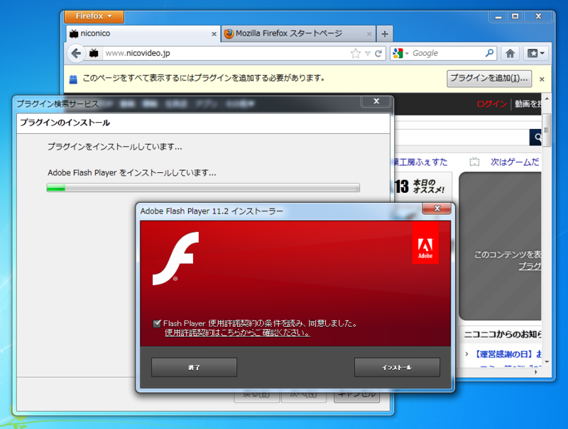
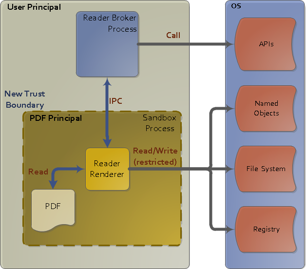
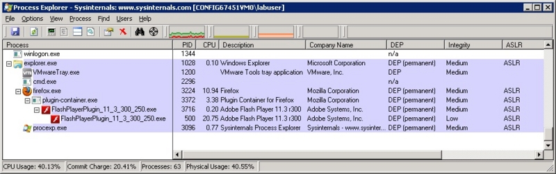

低い整合性レベル
公開日：
「Adobe Flash Player」v11.3.300.257は、8日（米国時間）に公開された「Adobe Flash Player」の最新版。このバージョンではWindows Vista/7で動作する「Firefox」向けにセキュリティ機能“保護モード”が追加されており、問題はこの“保護モード”機能に起因するものとみられる。
窓の杜 - 【NEWS】「Firefox」と「Adobe Flash Player 11.3」の組み合わせに問題、動画が視聴不能に
厄介な問題だよね……テスト不足ではあると思うけれど。ベータ版の Flash は一般公開されているけれど、実用にはちょっと厳しいし（バージョンチェックでハネられて使えない場合がある）、 Firefox ユーザーでかつ動画サイトも頻繁にチェックするテスターなんて、ユーザーレベルではあまりいないのかもしれない。まぁ、次からはテストケースに組み込まれるんだろうけど。

今のところ、Flash が未導入の場合はひとつ古い Adobe Flash Player 11.2 が案内される。けれど、すでにアップデートしてしまったユーザーは自分でロールバックしなきゃいけない*1。 11.3 にはセキュリティ問題の修正も入っているし*2、これで解決というわけにもいかない。なんせ、ほかのブラウザーでは問題なく動いているわけで。
今回問題となった"保護モード（Protected Mode）"は、Windows Vista以降で導入された"Windows 整合性レベル(Windows Integrity Levels、WIL)"によるアクセス制御機能を利用して、権限が一段低いサンドボックスプロセスを生成し、そこでプラグインコンテンツを再生させる*3。


- Inside Flash Player Protected Mode for Firefox « Adobe Secure Software Engineering Team (ASSET) Blog
- Inside Adobe Reader Protected Mode – Part 1 – Design « Adobe Secure Software Engineering Team (ASSET) Blog
- Inside Adobe Reader Protected Mode – Part 2 – The Sandbox Process « Adobe Secure Software Engineering Team (ASSET) Blog
サンドボックスプロセスの整合性レベルは"Low"（IEと同じ）で、これはテンポラリフォルダにしかアクセスできないということのようだ。整合性レベルによるアクセス制御は、ユーザ単位でのアクセス許可よりも優先して評価される。
Windows整合性レベル « Always on the clock
今回の問題は、おそらくどこかで与えられた以上に高いアクセス権限を要する処理が残っていて、そこでエラーになるんだろう。ポジティブにみれば、そういう部分がちゃんと見つかったのはいいことなのかもしれない。そこを突かれたら、あんなことこんなことができてしまうんだろうし。
-
CreateRestrictedToken 関数
- 最小限の特権: アプリケーションで Windows Vista のユーザー アカウント制御を有効に活用する
- Security: Inside Windows Vista User Account Control
Flash on Firefox はこの修正で、やっと Internet Explorer*4や Google Chrome 、Adobe Reader などと伍していけるセキュリティを身につけたのだけど……ちょっと躓いてしまった感じ。ほんとは Internet Explorer みたいに、ブラウザー全体がなるべく低い権限で動くのが理想なのだけど……
"権限を上げるのは簡単だけど、下げるのは難しい"。"データを混ぜるのは簡単だけど、分けるのは難しい"と並んで、ぜひ情報の初等教科書にのせておいてもらいたいコトバですね。
今回思ったのは、まだまだ Flash は捨てられないねーということ。そして、こういうところで躓いている Firefox の将来に少し不安を感じる。理想は結構だけど、現実に対応しきれてない、そんな印象を受けた。今回の件だって悪いのは Adobe だけど、まともなプラグインを作ってもらう土壌を用意するのは大事なことだ。 Microsoft や Google はそこんところしたたかで、折れるところは折れて、あくまでもユーザー・ファーストにやっているのを見ると、なおさらそう感じる。
ちなみに、僕が常用しているブラウザーは Google Chrome と IE9 。使い勝手もあるけど、まぁ、そんなのは二の次で、いろいろ考えてそうしているわけですよ。